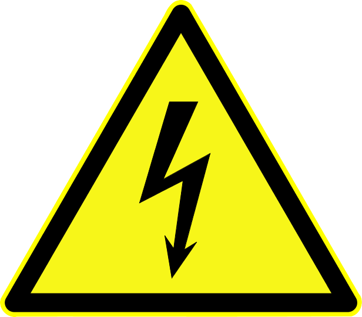

The waste water system consists of a 1100 litre holding tank, which accumulates grey water waste from sinks, basins and showers and black water waste from WCs. The holding tank is vented through the hull via a charcoal filter.
WCs pump waste directly to the holding tank. All other waste water flows by gravity to sumps positioned around the vessel which automatically pump collected waste to the holding tank.
The holding tank can be emptied through a deck pump-out connection or by use of the ship's own discharge pump.
Refer to Figure 4.3, “Safety equipment (above deck)” for a system overview.
 Never let the holding tank become too full: overfilling can cause a system malfunction with overflow of sewage water into the bilge and backflow into the rerst of the system.
Never let the holding tank become too full: overfilling can cause a system malfunction with overflow of sewage water into the bilge and backflow into the rerst of the system.
WCs pump macerated waste directly to the holding tank each time the 'flush' function is activated.
The WCs operate at 230VAC and are supplied via circuit-breakers in distribution cabinets C1 and C4. The WCs should normally remain powered whenever the vessel is in use.
 WC units operate at 230VAC, unplug from mains before servicing.
 sani2
sani2
Four sealed waste water sumps are located in the bilge at various locations around the vessel. Each sump contains a float switch which detects when the sump is full and energises a pump to dischargethe contents of the sump to the holding tank.
- SUMP1
Collects waste water from the guest cabin shower and from the lower-deck fancoil unit condensate drain. The unit is accessed through a hatch in the office floor.
- SUMP2
Collects waste water from washing machine, dishwasher, galley sink, day head basin, saloon fancoil unit condensate drain and the lower-deck porthole condensation drains. The unit is accessed through the crawlspace beyond the lower companionway.
- SUMP3
Collects waste water from the master cabin en-suite basin and shower. The unit is accessed through the crawlspace beyond the lower companionway.
- SUMP4
Collects waste water from the master cabin fancoil unit condensate drain. The unit is accessed through the hatch under the master cabin bed.
The sumps operate at 230VAC and are supplied via circuit-breakers in distribution cabinets C1 and C4. The sumps should normally remain powered whenever the vessel is in use.
Sump units operate at 230VAC, unplug from mains before servicing.
 sani1
sani1
The holding tank is equipped with an electronic tank level monitoring system consisting of a hydrostatic tank level sender which broadcasts messages onto the ship's domestic NMEA 2000 bus. Tank level data can be displayed on screens located at the helm, domestic panel and elsewhere.
 Variations in tank level readings are possible due to conditions of trim, list, seaway and callibration.
Variations in tank level readings are possible due to conditions of trim, list, seaway and callibration.
 Tank level readings require NMEA BUS 0 to be enabled on the ship's domestic panel.
Tank level readings require NMEA BUS 0 to be enabled on the ship's domestic panel.
 [mare1]
[mare1]
The holding tank can be emptied at a suitable shore-side pump-out facility or by pumping out using the ship's own discharge pump.
Splash the area around the pump-out DECK FITTING with water to prevent any possible spillage adhering to the deck.
Close the tank DISCHARGE VALVE.
Open the tank SUCTION VALVE
Open the DECK FITTING and connect the suction hose from the shore pump-out facility. Make the sure the connection between the inner surface of the DECK FITTING and the suction hose is secure and leak free.
Start the shore-side suction and allow to complete.
Disconnect suction hose.
Close DECK FITTING.
Wash down deck if necessary and wash hands.
Close SUCTION VALVE
Make entry in ship's log.
Make sure that the vessel is in a body of water where pumping out is permitted and that discharge will not inconvenience anyone.
Open DISCHARGE VALVE and SEA COCK.
Operate the WASTE switch at the helm panel to start the discharge pump. The helm alarm will signal an alert whilst the pump is running: the audible component of the alert can be silenced, but the visual alert will continue until the discharge pump is switched off.
Listen for a change in pump resonance which indicates the tank is empty or monitor progress of the discharge on a tank level display. Discharging a full holding tank will take over 30 minutes. Do not let the discharge pump run dry unnecessarily.
Switch off the waste pump.
Close DISCHARGE VALVE and SEA COCK.
Make an entry in the ship's log.
The vessel has an automatic discharge system integrated into the ship's NMEA 2000 controller. The automatic mode is selected from the WASTE switch at the helm panel and causes the controller to continuously monitor the waste level in the holding tank: at 90% capacity the controller will start the wast discharge pump, stopping it again when the tank reaches 10% capacity. Whilst the pump is in operation the helm alarm will signal an alert.
 Ensure that the DISCHARGE VALVE and SEA COCK remain open whilst the discharge system is set to automatic.
Ensure that the DISCHARGE VALVE and SEA COCK remain open whilst the discharge system is set to automatic.